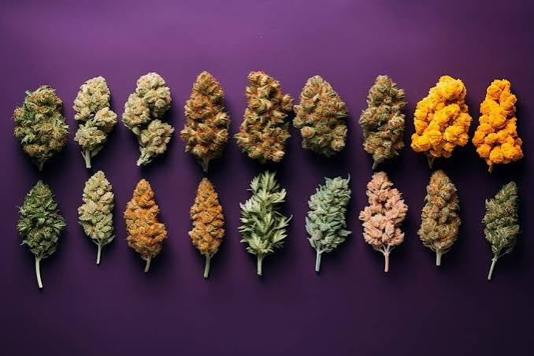

Disponemos de porrones clásicos fabricados con materiales resistentes y acabados de gran calidad.

Personalizamos porrones con nombres, fechas, escudos, logotipos o cualquier diseño solicitado por nuestros clientes.

Trabajamos con bodas, cumpleaños, peñas, empresas y todo tipo de celebraciones especiales.
Realizamos envíos rápidos y seguros para garantizar la mejor experiencia de compra.